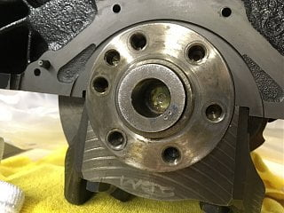
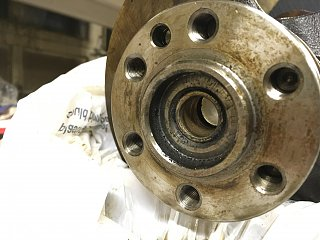

-
Has anyone ever swapped an engine setup for an automatic trans into their vehicle with a manual transmission? Or, used a crank from an engine that was mated to a automatic transmission, and swapped the crank into the engine for use with a manual transmission and had to remove the automatic transmission pilot bushing (or what the FSM calls a "Pilot Converter"?
I'm swapping in a JDM VG33E and the JDM engine was mated to an auto trans and I need to remove the pilot converter and install a pilot bushing to mate to my manual trans. I imagine one could use the typical hydraulic pressure" method and pop it out by pumping grease into the internal chamber in the back of the crankshaft, but I would need a really large bolt or pin of some kind.
Anyone have any advice on such a job?
Thanks!  -
You would need something with a tighter fitment than a bolt to keep the grease from just oozing out around the bolt.
Not a pilot converter, but years ago my buddy and i used a shaved down wooden dowel so that it was a tight fit, loaded up the cavity with grease and whacked the shit out of the back of the dowel. iirc it took a couple trial and error efforts to get the dowel the right diameter to hydraulically pop out the pilot bearing in his HiLux pickup.
84 AE/Shiro #683/Shiro #820/84 Turbo -
Thanks for the reply! Yeah, I figured that might occur. A friend of mine said he had done it that way, so I thought I'd get some other opinions. I was successful using a 14 mm deep socket (1/4" drive), with a 3/8" to 1/4" reducer connected to block off the small hole in the back of the socket (I inserted the reducer and back side of the socket into the crankshaft cavity). I filled it with grease, made a visual mark on the pilot converter with a marker, so I could gauge my progress, and tapped on it with a small, but heavy hammer. It popped out nicely. I did have to "refill" the cavity with more grease, one time while as I was tapping on the socket, to make up for the grease being displaced out from the cavity (and some squeezing through the socket/reducer assembly).
It worked much better than I imagined.

Copyright © 2006–. All rights reserved. Privacy Policy